- Place the beef strips into a medium bowl. Add the “beef marinade” and gently mix the sauce into the meat. Cover the bowl with food wrap and set it aside while you’re working on other ingredients.
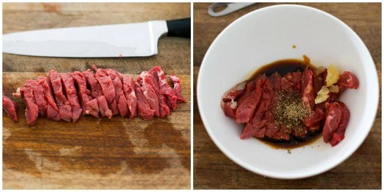
- Get the rest of ingredients ready per below.
- Prepare the vegetables as instructed in the “main ingredients” section.
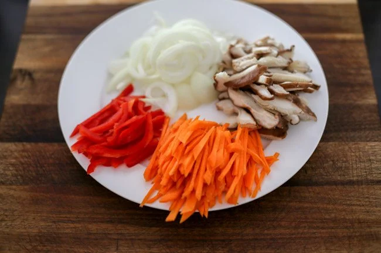
-
Put the sliced mushroom into a medium bowl and add 1 Tbsp of “noodles & mushroom marinade” mixture. Mix them well. Set it aside until you cook it (in about 20 mins).
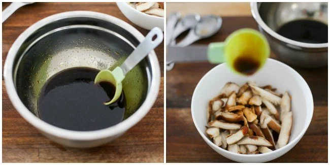
-
Blanch the spinach in rolling boiling water (5 to 10 seconds). Drain the water and quickly cool it down by running it under cold tap water. Squeeze the spinach to remove any excess water and put it into a mixing bowl.
Add the “spinach seasoning” and mix them gently and evenly. Put it into a large mixing bowl where we will be adding the rest of the prepared ingredients in later.
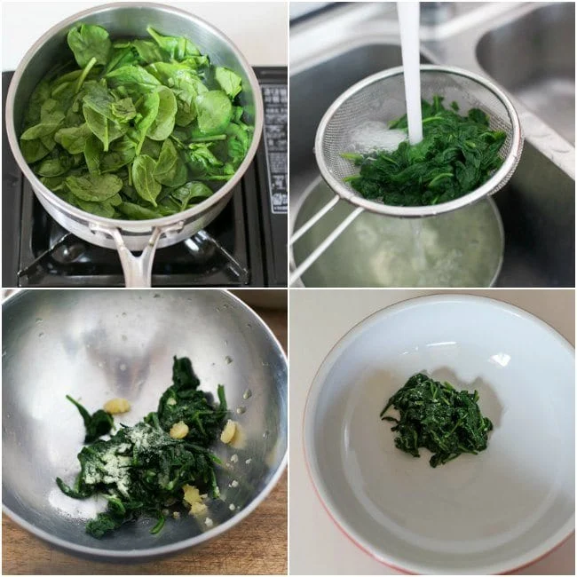
-
Boil some water in a large pot. Once the water starts to boil (6 to 8 mins later), add the noodles and boil them for 6 to 7 mins. Drain the water. Rinse in cold water to cool down and let the water drain for 1 to 2 mins.
Cut the noodles with a pair of kitchen scissors a couple of times. (Between 15 to 20 cm / 6 to 8 inches length is good). Move the noodles into a mixing bowl and pour in the rest of the “noodles & mushroom marinade” mixture. Mix them well. Set it aside until you cook it (in about 10 mins).
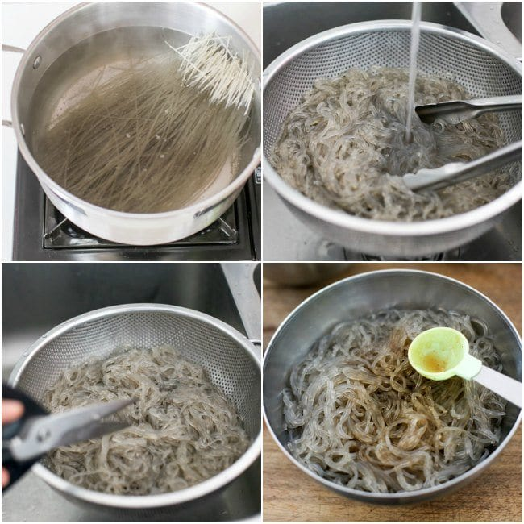
- Start cooking the prepared ingredients per below. Follow the order if you can. We are cooking lighter color to darker color (to minimize the color transfer and avoid washing up in between) and will be using only one non-stick pan/skillet.
Once each step is completed, move them into the large mixing bowl (except for the first two – egg white and egg yolk), where we will be mixing all ingredients in before serving.
-
Beat the egg white with a fork. Add some cooking oil (1 tsp) on a well heated pan and spread it well. Pour the egg white mixture and cook both sides on low heat (1-2 mins). Transfer it onto a clean cutting board and set aside.
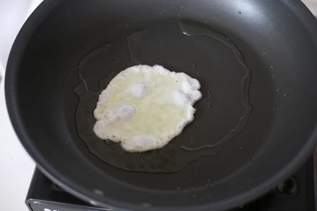
-
Beat the egg yolk with a fork. (If necessary, add more cooking oil onto the pan and spread it well.) Pour the egg yolk mixture and cook both sides on low heat (1-2 mins). Transfer it onto a clean cutting board and set aside.
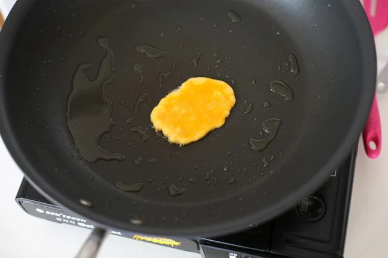
-
Add more oil if necessary. Cook the onion with a pinch of salt over low to medium heat until it softens (1-2 mins). Transfer it to the large mixing bowl.
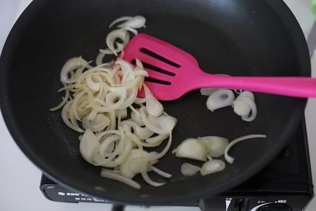
-
Add more oil if necessary. Cook the carrots with a pinch of salt over medium heat until it softens (1-2 mins). Transfer it to the large mixing bowl.
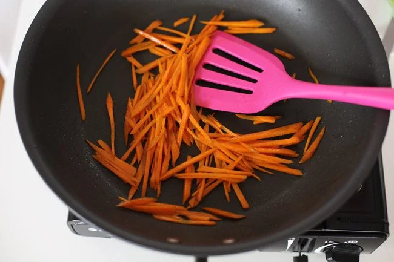
-
Add more oil if necessary. Cook the red capsicum with a pinch of salt over low to medium heat until it softens (1-2 mins). Transfer it to the large mixing bowl.
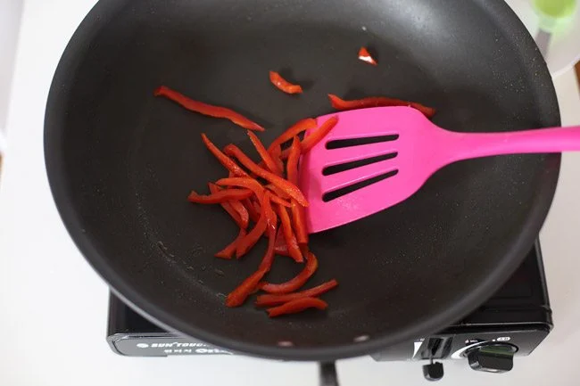
-
Add more oil if necessary. Pour in the marinated mushroom (incl. the residue sauce from the bowl) and stir fry until it is cooked (1-2 mins) over low to medium heat. Transfer it to the large mixing bowl.
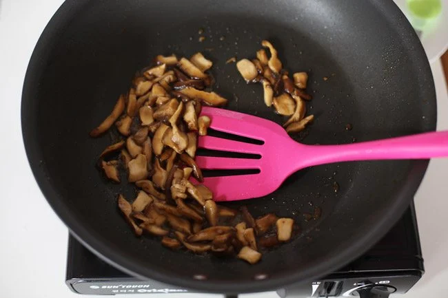
-
Add more oil if necessary. Pour in the marinated meat and stir fry until it is cooked (2-3 mins) over medium heat. Transfer it to the large mixing bowl.
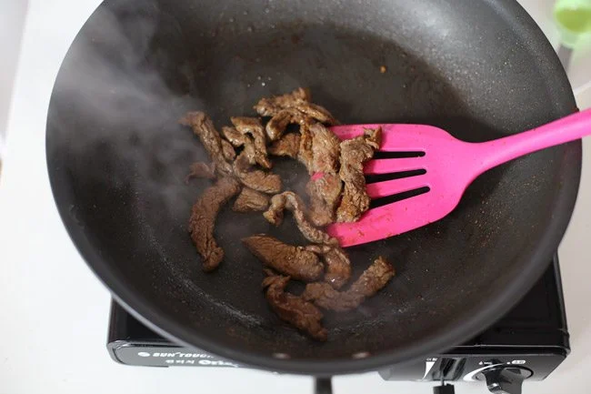
-
Add more oil if necessary. Stir fry the marinated noodles until the noodles are well coated with the sauce (2-3 mins) over low to medium heat. Transfer it to the large mixing bowl.
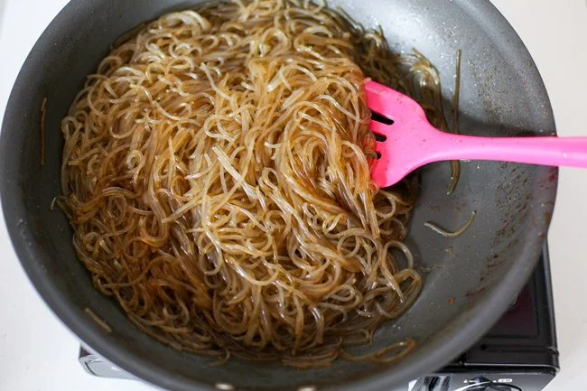
- Thinly slice the egg white and egg yolk like match sticks. Add them into the large mixing bowl as used above.
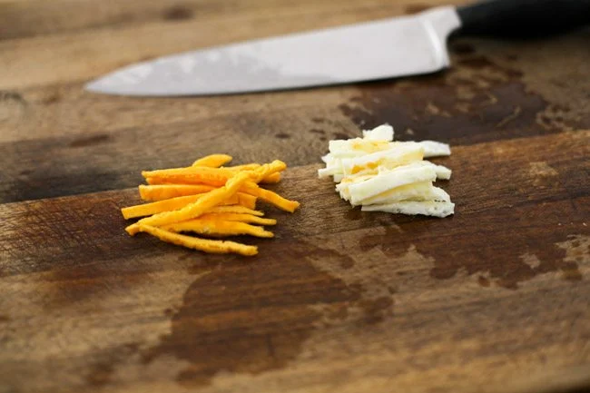
- Add the rest of the “finishing touch” ingredients – sesame oil and sesame seeds into the large mixing bowl and gently mix them around with your hands.
(Watch your hands, as the ingredients, particularly the noodles might be still hot. You can also use a salad server to mix initially then mix with your hands once it cools down enough.)
Serve and enjoy!
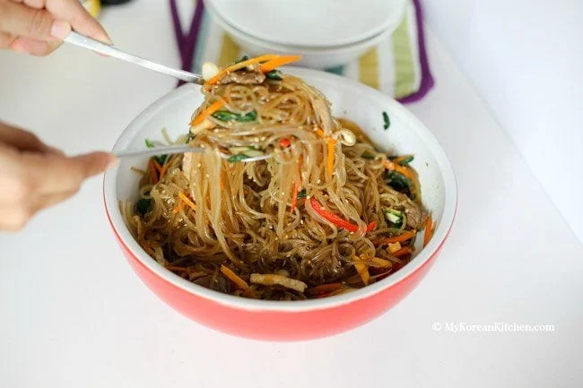
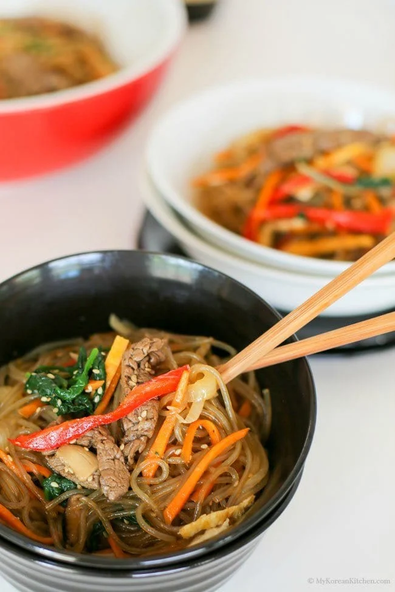